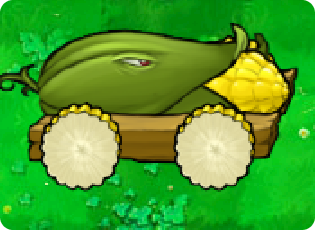

Back to Plants

Cob Cannon
 500
500
 Massive
Massive
 Very Slow
Very Slow
 Normal
Normal
Level Acquired: Crazy Dave's Shop: $20000
What's the deal with Cob Cannon, anyway? He went to Harvard. He practices law in a prestigious New York firm. He can explode whole areas of zombies with a single corn launch. All this is common knowledge. But deep inside, what really makes him tick?
Plant Description
- Cob Cannon is an upgrade plant, which can be purchased from Crazy Dave at his shop. He is a manual multi-use instant kill plant. He must be planted on two side-by-side Kernel-pults, which must be placed one in front of the other in the same lane (horizontally). Cob Cannons cost $20,000 to buy in Crazy Dave's Twiddydinkies. He takes exactly 34.75 seconds to give out a new corn cob.
- The Cob Cannon costs 500 sun to place and does not fire automatically. Instead, it has a missile effect and animation. The missile itself is a corn cob which takes 34.75 seconds for the Cob Cannon to load. Once it is ready, the player can click (or press the XBOX A.png/PS3 X.png button in the console versions) on the Cob Cannon and then use the crosshair to aim the shot.
Strategies
- One thing to note is the cost: 700 sun is a lot to pay for a plant. To make sure your sun was well-used, make sure to use your Cob Cannon plenty of times. To save more sun than repeatedly using Cherry Bombs, make sure to use the Cob Cannon at least five times (as 150 times five is 750, and Cob Cannons cost 700, meaning a saving of 50 sun), and the minimal time to make that up is exactly two minutes and 30.64 seconds, given the fact the first cob only takes about five seconds to arm. For more Cob Cannons, repeat as needed.
- The Cob Cannon is better than the Cherry Bomb in three ways. First, he is reusable. Second, his cob recharges faster than a Cherry Bomb. Third, its cob can be fired on plants (including itself) and ice (without the need of a Jalapeno) or the pool (without the need of a Lily Pad), while a Cherry Bomb needs a Lily Pad for Pool (Flower Pot for Roof) use and cannot be planted on other plants (besides the Pumpkin and Flower Pot) and ice. In a few words, he is a ballistic missile in corn-cob form.